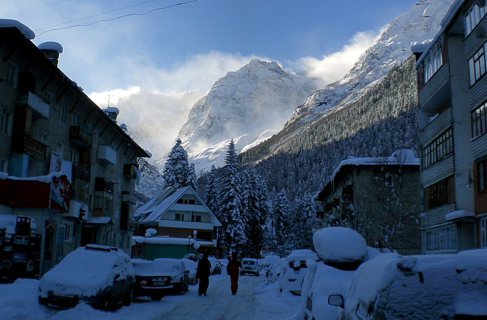

С Дона — на склон
Гид по горнолыжным курортам России для тех, кто живёт в Ростове-на-Дону: куда поехать, когда открывается сезон и сколько стоит катание.
Смотреть курортыПочему из Ростова удобно ехать в горы

Ростов-на-Дону часто называют воротами Кавказа, и для лыжника это настоящая удача. Самые высокие горы страны находятся всего в 600–750 километрах от города: до Домбая и Архыза можно доехать на машине за один день, до Приэльбрусья — чуть дольше. Курорты Красной Поляны под Сочи ещё ближе по времени, если лететь самолётом.
Поэтому ростовчанину не обязательно копить на отпуск в Альпах: хватит длинных выходных, чтобы покататься по настоящим горным трассам. Кавказские курорты отличаются друг от друга. Сочи — это современная инфраструктура и большие зоны катания, Архыз — доступные цены и солнце, Домбай — красота гор, Эльбрус — высота и снег до мая.
На сайте собраны главные курорты России, в том числе далёкий Шерегеш и Игора под Петербургом. По каждому есть самое важное перед поездкой: даты сезона, цена ски-пасса, количество трасс, перепад высот и текущие акции.
Курорты
-
 Подробнее
ПодробнееРоза Хутор
Сочи · ≈ 100 км трасс
-
 Подробнее
ПодробнееГазпром
Сочи · для семей и новичков
-
 Подробнее
ПодробнееКрасная Поляна
Сочи · сложные трассы
-
 Подробнее
ПодробнееАрхыз
Карачаево-Черкесия · ≈ 650 км
-
 Подробнее
ПодробнееДомбай
Карачаево-Черкесия · ≈ 600 км
-
 Подробнее
ПодробнееЭльбрус
Кабардино-Балкария · до 3850 м
-
 Подробнее
ПодробнееШерегеш
Кемеровская область · сезон до мая
-
 Подробнее
ПодробнееИгора
Ленинградская область · вечернее катание